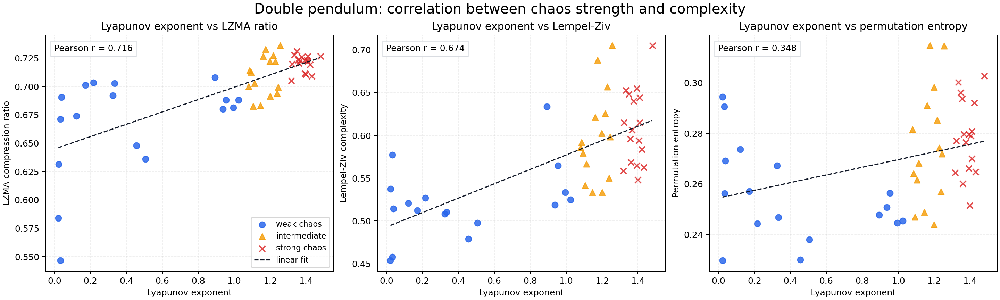
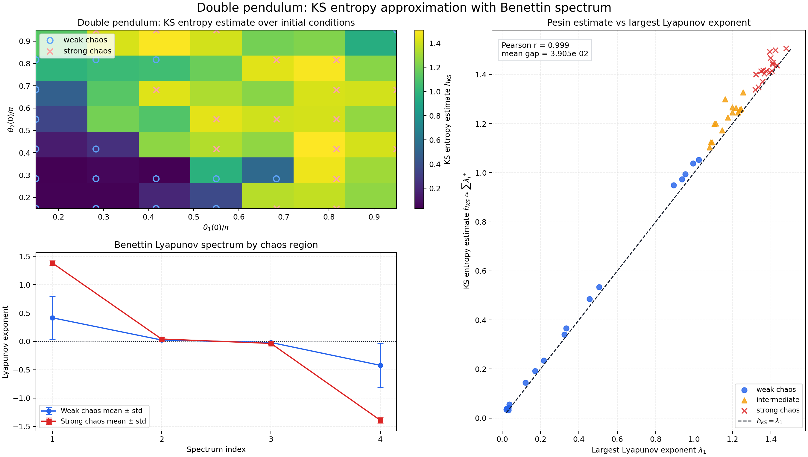
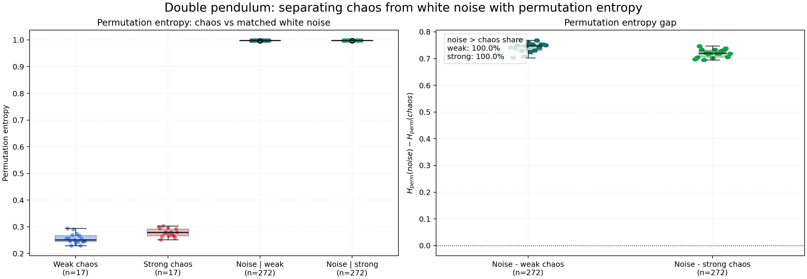
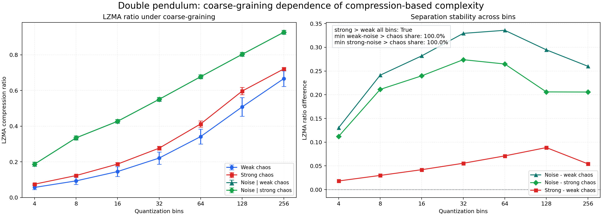
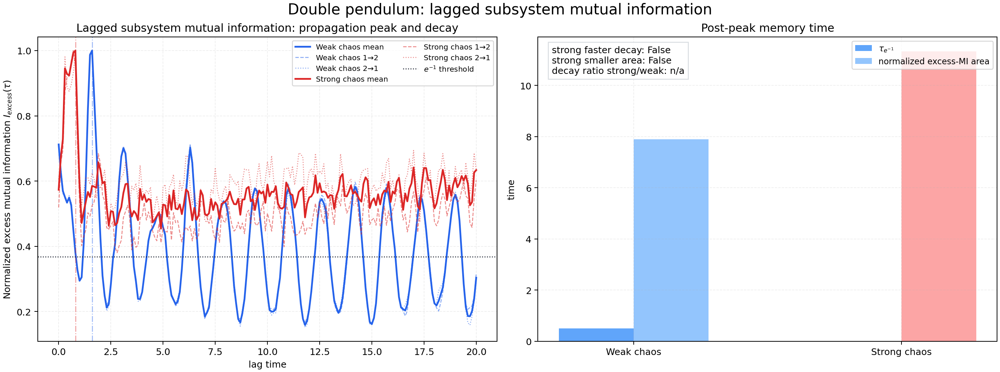
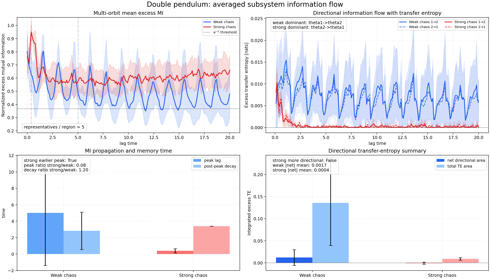

Key Thesis
カオスは「情報を消す」のではなく、
情報の形を変える。
強カオスでは Lyapunov 指数、KS エントロピー、圧縮複雑性、粗視化エントロピー生成が増えます。
ただし局所的で方向付きの情報流は弱まり、情報はより広く scramble された形で残ります。
Double Pendulum / Numerical Study / Chaos
同じ二重振り子でも、どの初期条件では弱く、どこでは強くカオスになるのか。
このページでは、49 個の初期条件に対する数値実験をまとめ、複雑性、情報生成率、
粗視化エントロピー、部分系情報流までを 1 本のストーリーとして読み解きます。
Key Thesis
強カオスでは Lyapunov 指数、KS エントロピー、圧縮複雑性、粗視化エントロピー生成が増えます。
ただし局所的で方向付きの情報流は弱まり、情報はより広く scramble された形で残ります。
7 × 7 グリッド
複雑性から surrogate まで
Pesin relation に近い
strong / weak slope 比
Weak chaos
情報共有も transfer entropy も、時間順序を壊した surrogate よりかなり大きい。
Strong chaos
mutual information は残る一方、transfer entropy は surrogate に近づく。
Big Picture
カオス性を 1 つの指標でなく、複数の窓から同時に見ると構造がはっきりする。
Core Message
強カオスほど「複雑で混ざる」。ただし「向きのある予測可能情報」はむしろ弱くなる。
このページは、Lyapunov 指数だけでは見えない二重振り子のカオス性を、複雑性と情報流の観点からまとめ直した結果ページです。
Overview
対象は等質量・等長の二重振り子です。時間発展は RK4 で追い、最大 Lyapunov 指数の tertile で weak chaos と strong chaos を切り分けました。
Experiment Setup
Region Summary
同じ二重振り子でも、初期条件に応じてカオスの強さがかなり変わることが出発点です。
Findings
8 本の実験は別々に見えて、実は 4 つの大きなテーマに収束します。まずはそこを先に読むと、各図の意味がつながります。
1
LZMA ratio、Lempel-Ziv complexity、Permutation entropy はすべて strong chaos 側で増え、Lyapunov 指数と正相関を示した。
2
KS エントロピー近似と最大 Lyapunov 指数は r = 0.9986 でほぼ一致し、軌道不安定性と情報生成がつながった。
3
Permutation entropy では白色ノイズがほぼ最大値 1 を取り、カオスとは 100% 分離できた。粗視化を変えても相対序列は保たれた。
4
mutual information peak は strong chaos で早いが、transfer entropy は surrogate に近づき、局所的な方向付き情報流は弱くなる。
Experiments 1-2
最初の 2 本の実験では、まず複雑性指標が chaos strength と整合するかを見て、その背後にある情報生成率の指標として KS エントロピーを重ねています。
Experiment 1
strong chaos の方が weak chaos よりも、圧縮困難性、新規パターン生成率、局所順序複雑性のすべてで高い値を示しました。


Experiment 2
Benettin 法で Lyapunov spectrum を推定し、正の指数和を KS エントロピー近似として比べると、最大 Lyapunov 指数とほぼ同じ形になりました。

Experiments 3-4
カオスが本当に「力学的な複雑さ」なら、白色ノイズとは違うはずで、粗視化の取り方を変えても相対順序はある程度保たれるはずです。ここではそこを点検します。
Experiment 3
同じ平均・標準偏差・長さを持つ白色ガウスノイズと比べると、Permutation entropy はノイズ側でほぼ最大になり、カオスと完全分離できました。
Experiment 4
LZMA ratio の絶対値はビン数に依存しますが、strong chaos > weak chaos、noise > chaos の序列は 4 から 256 bins まで維持されました。


Experiment 5
位相空間に小さな初期分布を置き、セル占有確率から Shannon entropy S(t) を測ると、strong chaos の方が明らかに速く coarse-grained entropy を生成しました。
Entropy Growth
fine-grained では Liouville 的に保存される分布でも、粗視化すると強カオス側で急速にセルを埋め、観測可能な entropy が増えます。

Experiments 6-7
θ₁ と θ₂ を部分系とみなし、まず excess mutual information で共有情報の立ち上がりと tail を見て、次に transfer entropy で方向付き情報流を見ます。
Experiment 6
single-orbit の比較では、strong chaos の方が MI peak へ早く到達しました。ただし peak 後の tail はむしろ長く、単純な「情報が速く消える」という像にはなりませんでした。
Experiment 7
5 本ずつの代表軌道で平均すると、strong chaos の MI peak が早い傾向は残ります。一方で transfer entropy の方向性は weak chaos の方が強く、strong chaos ではかなり弱い。


Experiment 8
最後に時間順序を壊した shuffled surrogate を actual trajectory と比べることで、見えていた MI / TE が本当に力学構造に由来するのか、それとも有限標本バイアスや見かけの相関なのかを切り分けます。
Surrogate Test
weak chaos では MI も TE も surrogate を大きく上回り、強い決定論的時間構造が残ります。strong chaos でも MI は本物ですが、TE は surrogate にかなり近づきます。

What It Means
相関そのものは残ります。しかし時間順序を持ち、局所 subsystem からアクセスできる形の情報は薄れます。つまり strong chaos は fast scrambling and delocalization の像に近い。
Takeaways
二重振り子のカオス性は「未来が読めない」の一言では足りません。複雑性、情報生成率、混合、情報流を分けて見ると、何が増え、何が消えるのかがはっきりします。
A
Lyapunov 指数と KS エントロピー近似の一致は、軌道分離がそのまま情報生成率として見えていることを示す。
B
局所順序構造と coarse-graining を通しても、白色ノイズとカオスはきれいに分離される。
C
情報共有は速くなるのに、局所的で方向付きの予測可能情報はむしろ見えにくくなる。そこに scrambling の本質がある。